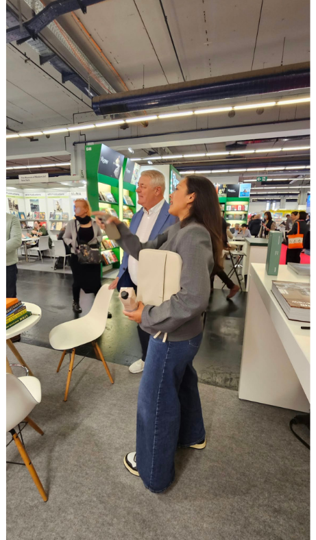

Die Wurzeln
Gründung des Reise- und Verkehrsverlages.
Im Buchmarkt ist GeoCenter seit Jahrzehnten zuhause. Wir verbinden Marktkenntnis, persönliche Betreuung und ein deutschlandweites Vertriebsnetz – immer nah an Verlagen, Buchhandel und Verkauf.

Wir kennen den Buchhandel, seine Strukturen und seine Menschen. Deshalb geht es für uns nicht nur darum, Programme anzubieten – sondern darum, für sie den richtigen Platz im Markt zu finden.
Unsere Geschichte reicht fast ein Jahrhundert zurück. Aus den Wurzeln im Reise- und Verkehrsverlag entstand GeoCenter, wurde Teil von Bertelsmann und 1997 im Management Buy-out wieder unabhängig.
Gründung des Reise- und Verkehrsverlages.
RV und Zumstein gründen gemeinsam das GeoCenter.
GeoCenter wird zu 100 % Teil des Bertelsmann-Konzerns.
Management Buy-out durch Hans Jürgen Pfister und Dr. Klaus Höhne – bekannt gegeben auf der Frankfurter Buchmesse.
Lagerhaltung und Auslieferung ab dem neuen KNO-Logistikzentrum in Erfurt, heute Kolibri360.
GeoCenter wird in der nächsten Generation von Anja-Alexandra Pfister gemeinsam mit Dr. Klaus Höhne geführt.
Über viele Jahre war er ein fester Orientierungspunkt im Buchhandel. Originalfoto und zeitliche Einordnung ergänzen wir, sobald die Archivdaten geprüft sind.
Hinter GeoCenter stehen rund 20 Mitarbeitende aus Vertriebsinnendienst, Vertriebsaußendienst, Verlagsbetreuung, Controlling und Logistik.
Unser Außendienst und unsere Handelsvertretungen sorgen für den direkten Austausch mit Buchhandlungen und Handelspartnern in den Regionen.
Außendienst & Ansprechpartner →Persönliche Betreuung vor Ort – bundesweit vernetzt und nah an Buchhandlungen und Handelspartnern.
Lassen Sie uns darüber sprechen, wie wir Ihr Programm im Markt weiterentwickeln können.
Gespräch starten →Unsere Erfahrung im Buchmarkt und die persönliche Arbeit im Außendienst sind wichtige Stärken. Wir ergänzen sie konsequent durch digitale Prozesse und datengetriebene Analysen – für Entscheidungen, die nachvollziehbarer und gezielter werden.
Mehr über unsere Potenzialanalysen ↗